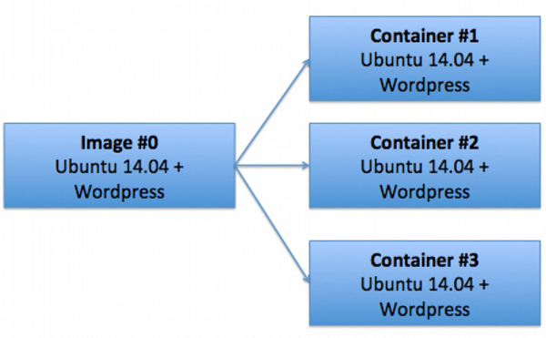
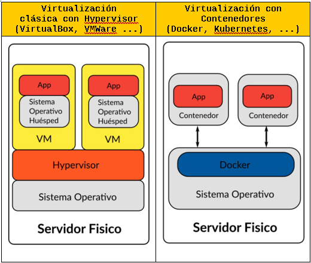
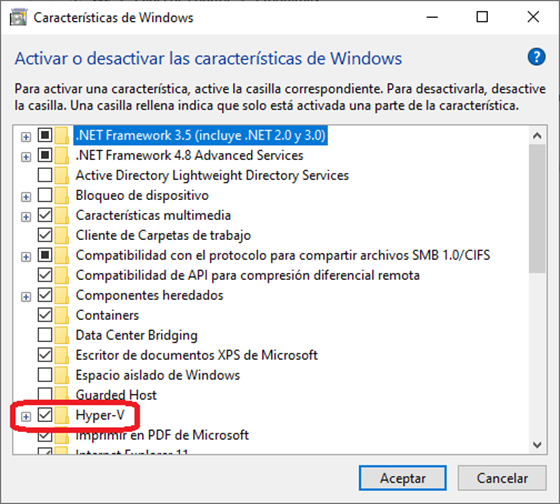
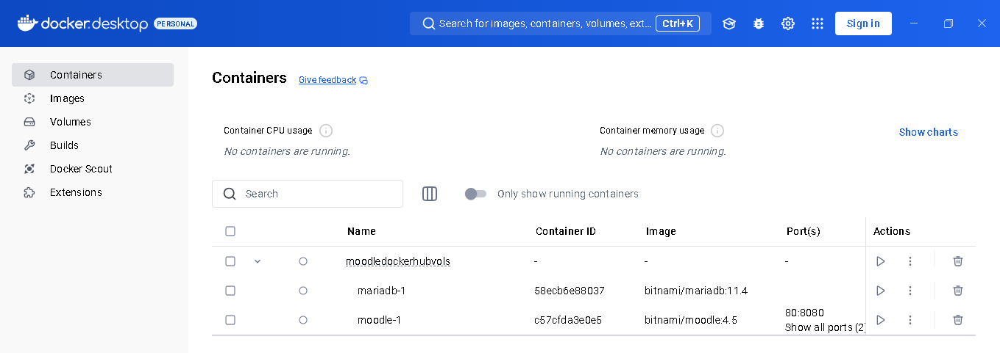
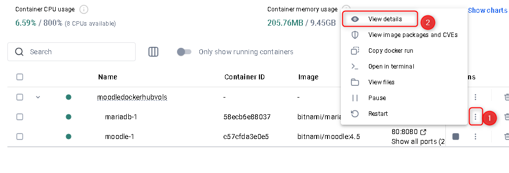
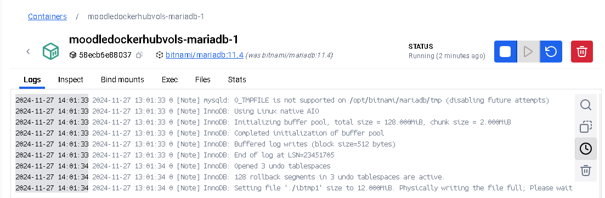
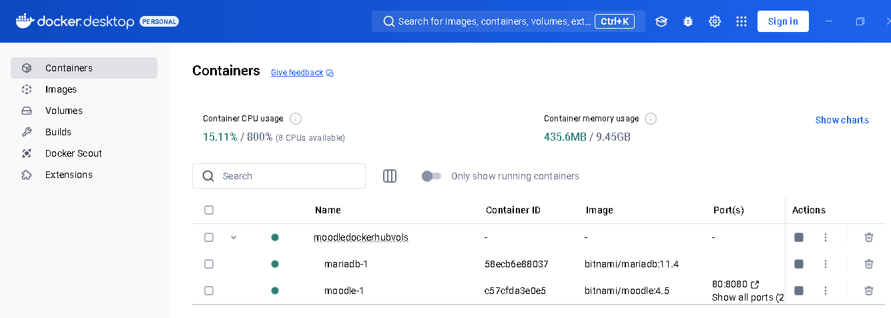
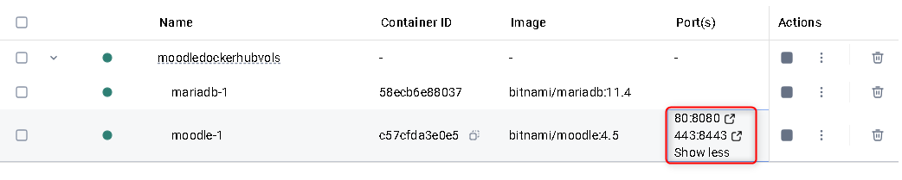

Docker es un proyecto de código abierto que automatiza el despliegue de aplicaciones dentro de contenedores de software, proporcionando una capa adicional de abstracción y automatización de virtualización de aplicaciones en múltiples sistemas operativos.
Docker es una plataforma de virtualización a nivel de sistema operativo que permite crear una aplicación y empaquetarla junto con sus dependencias y librerías en un contenedor que será capaz de ejecutarse en cualquier otra máquina que disponga de una capa para la gestión de dichos contenedores.
Una imagen es una especificación estática de lo que debería ser el contenedor en tiempo de ejecución, incluido el código de la aplicación y las configuraciones de tiempo de ejecución.
Un contenedor es la instanciación de una imagen, y puede haber múltiples instancias de un mismo contenedor.
Por ejemplo, a partir de una imagen que contenga un Ubuntu + Wordpress podríamos crear 3 contenedores ejecutándose de manera independiente:

Hay dos versiones de Docker, una libre y otra comercial. Nosotros trabajaremos con Docker Community Edition, que es la versión libre.
La virtualización clásica permite que sus sistemas operativos (Windows o Linux) se ejecuten simultáneamente en un solo sistema de hardware.
En la virtualización con contenedores las aplicaciones instaladas comparten el mismo kernel del sistema operativo y separan los procesos de las aplicaciones del resto del sistema.

Los contenedores permiten desplegar aplicaciones más rápido, arrancarlas y pararlas más rápido y aprovechar mejor los recursos de hardware.
Las máquinas virtuales nos permiten crear sistemas completos totalmente aislados, con mayor control sobre el entorno y mezclando sistemas operativos host y huésped.
Para instalar Docker utilizaremos, descargándolo desde aquí: Docker Desktop
Ejecutar el instalador y seguir los pasos. Al finalizar la instalación, es posible que se nos pedirá reiniciar el sistema.
La instalación de Docker activa el Hyper-V de Windows en "activar y desactivar características de Windows", lo que provoca en ocasiones algún problema si también tenemos VirtualBox.

Docker se ejecuta en segundo plano y muestra un icono en la barra de herramientas.
Al abrir el programa veremos que tenemos Contenedores, Imágenes, Volúmenes y Redes.
En contenedores veremos los contenedores que tenemos creados y si están en marcha o no.
En imágenes veremos las imágenes que tenemos descargadas en nuestro repositorio local.
En volúmenes veremos los volúmenes que tenemos creados para guardar datos de los contenedores.
Vólumnes de datos
Si queremos llevarnos los datos de la aplicación a otro equipo, debemos copiar la carpeta donde se guardan los volúmenes de datos. En Windows suele ser C:\Users\Usuario\AppData\Local\Docker\wsl\data\ext4.vhdx. Esta carpeta contiene todos los volúmenes de datos de Docker, y si la borramos perderemos todos los datos de las aplicaciones que tengamos instaladas en Docker.
La mejor opción es crear los volúmenes de datos dentro de la carpeta del proyecto, para que podamos copiarlos a otro equipo sin problemas. Esto se hace en el archivo docker-compose.yml, indicando la ruta donde queremos guardar los datos con "." delante.

Si el contendedor no está en marcha al darle al play, podemos ver los logs desde los 3 puntos de la derecha del contenedor.

Veremos en el log que error ha habido si no ha arrancado correctamente.

Si tenemos una carpeta con un proyecto de Docker, podemos moverlo a otro equipo copiando la carpeta completa. En el otro equipo, abrimos Docker Desktop y desde la terminal nos movemos a la carpeta del proyecto y ejecutamos:
docker-compose up -d
Esto será más rápido que volver a descargar las imágenes, ya que las imágenes se descargan en el primer equipo y se copian a la carpeta del proyecto. En el segundo equipo, Docker Desktop detectará que ya tiene las imágenes necesarias y no las volverá a descargar.
Puede darte un error de permisos del directorio de datos:
"Su directorio de datos puede ser leído por otros usuarios. Por favor, cambie los permisos a 0770"
Nextcloud comprueba que nextcloud/html/data no sea legible por "otros" (permisos tipo 777/755). Te ha pasado al copiar y pegar la carpeta porque Windows (o el método de copia) le ha puesto permisos demasiado abiertos al restaurarla.
Para quitar esta restricción de Nextcloud, abrimos el archivo nextcloud\html\config\config.php y añadimos esta línea dentro del array (por ejemplo, justo después de la línea 'datadirectory' => ...):
'check_data_directory_permissions' => false,
Para mayor agilidad en el aula os proporcionare la carpeta del proyecto con la aplicación ya instalada y funcionando, para que solo tengáis que copiarla a vuestro equipo y arrancar los contenedores con docker compose up -d.
En la mayoría de instalaciones necesitamos varios contenedores para ofrecer servicios en diferentes contenedores pero dependientes entre sí. Por ejemplo, tener un servidor apache con PHP y otro servidor con mysql.
En estos casos, es mucho mejor utilizar docker compose. Esta utilidad dispone de un script con extensión yml que configura estos servicios.
Por lo tanto, para instalar cualquier aplicación web con docker realizaremos los siguientes pasos:
Crear una carpeta para el proyecto
Copiar en la carpeta el correspondiente archivo docker-compose.yml según la aplicación que queramos instalar. Es posible que necesitemos crear alguna carpeta adicional para guardar los datos persistentes de la aplicación (bases de datos, archivos subidos, etc). Estas carpetas deben estar indicadas en el archivo docker-compose.yml. También puede ser necesario crear un archivo .env para definir variables de entorno.
Desde el terminal estando ubicados en la carpeta del proyecto donde esta ubicado docker-compose.yml, ejecutar el siguiente comando:
docker-compose up -d
Si el archivo se llama de otra forma, deberemos indicar el nombre del archivo con el parámetro -f, por ejemplo:
docker-compose -f archivo.yml up -d
Comprobar en Docker que todo ha ido bien y está el servicio en marcha.

Para acceder a la aplicación podemos ver desde aquí la URL con el puerto que está utilizando. Normalmente será localhost:puerto.

En el primer arranque, el contenedor de Nextcloud copia todo el código (~1 GB descomprimido) desde la imagen a ./nextcloud/html porque has montado esa carpeta. En un PC lento del aula esto puede tardar varios minutos. Señal de que va bien: la carpeta ./nextcloud/html va llenándose de archivos y docker compose logs nextcloud no muestra errores. No es raro que en ese intervalo el navegador no cargue nada.
# docker-compose.yml — Nextcloud PORTABLE con SQLite
# Para llevarlo a otro equipo: copiar ESTA carpeta entera y ejecutar: docker compose up -d
services:
nextcloud:
image: nextcloud:29.0.16-apache # versión EXACTA de la copia maestra (no hacer pull nunca)
restart: unless-stopped
ports:
- "8900:80"
volumes:
- ./nextcloud/html:/var/www/html # TODO viaja aquí: código, datos y BD SQLite
environment:
# Solo actúan si la carpeta viene vacía (instalación automática):
- NEXTCLOUD_ADMIN_USER=profesor
- NEXTCLOUD_ADMIN_PASSWORD=CambiarEstaClave.2026
- SQLITE_DATABASE=nextcloud
- PHP_MEMORY_LIMIT=512M
- OVERWRITEPROTOCOL=http
- OVERWRITECLIURL=http://localhost:8900
mem_limit: 512m
# docker-compose.yml — Nextcloud PORTABLE con MariaDB
# Para llevarlo a otro equipo: copiar ESTA carpeta entera y ejecutar: docker compose up -d
services:
nextcloud:
image: nextcloud:29.0.16-apache # versión EXACTA de la copia maestra (no hacer pull nunca)
restart: unless-stopped
depends_on:
- db
ports:
- "8900:80"
volumes:
- ./nextcloud/html:/var/www/html # código y datos de archivos
environment:
- MYSQL_PASSWORD=nextcloud
- MYSQL_DATABASE=nextclouddb
- MYSQL_USER=nextcloud
- MYSQL_HOST=db
- PHP_MEMORY_LIMIT=512M
- OVERWRITEPROTOCOL=http
- OVERWRITECLIURL=http://localhost:8900
mem_limit: 512m
db:
image: mariadb:11.8 # versión EXACTA de la copia maestra (no hacer pull nunca)
restart: unless-stopped
command: >-
--transaction-isolation=READ-COMMITTED
--binlog-format=ROW
--innodb-buffer-pool-size=64M
--skip-name-resolve
--performance-schema=OFF
volumes:
- ./db:/var/lib/mysql # BD EN CARPETA: imprescindible para la portabilidad
environment:
- MYSQL_ROOT_PASSWORD=nextcloud
- MYSQL_PASSWORD=nextcloud
- MYSQL_DATABASE=nextclouddb
- MYSQL_USER=nextcloud
mem_limit: 256m
# docker-compose.yml — Moodle PORTABLE
# Para llevarlo a otro equipo: copiar ESTA carpeta entera y ejecutar: docker compose up -d
services:
moodle:
image: oksigenia/moodle:4.5 # 4.5 es la rama LTS (recomendada); 5.3 es la actual
restart: unless-stopped
depends_on:
- db
ports:
- "8080:8080"
volumes:
- ./moodle:/bitnami/moodle # código + config.php
- ./moodledata:/bitnami/moodledata # cursos, subidas de alumnos, caché
environment:
# Solo actúan en la instalación inicial (primera vez con carpeta vacía):
- MOODLE_DATABASE_HOST=db
- MOODLE_DATABASE_PORT_NUMBER=3306
- MOODLE_DATABASE_NAME=moodledb
- MOODLE_DATABASE_USER=moodle
- MOODLE_DATABASE_PASSWORD=moodle
- MOODLE_USERNAME=admin
- MOODLE_PASSWORD=CambiarEstaClave.2026
- MOODLE_SITE_NAME=Moodle del Aula
- MOODLE_EMAIL=profesor@iesdoctorbalmis.com
- MOODLE_HOST=localhost:8080 # con esto el wwwroot queda http://localhost:8080
mem_limit: 512m
db:
image: mariadb:11.8
restart: unless-stopped
command: >-
--transaction-isolation=READ-COMMITTED
--innodb-buffer-pool-size=64M
--skip-name-resolve
--performance-schema=OFF
volumes:
- ./db:/var/lib/mysql # BD en carpeta: imprescindible para portabilidad
environment:
- MYSQL_ROOT_PASSWORD=moodle
- MYSQL_PASSWORD=moodle
- MYSQL_DATABASE=moodledb
- MYSQL_USER=moodle
mem_limit: 256m
Además, se podrñia separar la configuración de las variables de entorno en un archivo .env para que no estén visibles en el docker-compose.yml, y así poder cambiar los valores sin tener que modificar el archivo docker-compose.yml.
En un archivo .env podemos definir las variables de entorno:
# Configuración del aula — Moodle portable
MOODLE_PORT=8080
MOODLE_ADMIN_USER=admin
MOODLE_ADMIN_PASSWORD=CambiarEstaClave.2026
MOODLE_SITE_NAME=Moodle del Aula
MOODLE_EMAIL=profesor@iesdoctorbalmis.com
# Base de datos
MYSQL_ROOT_PASSWORD=moodle
MYSQL_PASSWORD=moodle
MYSQL_DATABASE=moodledb
MYSQL_USER=moodle
Y en el docker-compose.yml podemos referenciar estas variables de entorno con la sintaxis ${VARIABLE}:
# Para llevarlo a otro equipo: copiar ESTA carpeta entera (incluido el .env) y ejecutar: docker compose up -d
services:
moodle:
image: oksigenia/moodle:4.5
restart: unless-stopped
depends_on:
- db
ports:
- "${MOODLE_PORT}:8080"
volumes:
- ./moodle:/bitnami/moodle
- ./moodledata:/bitnami/moodledata
environment:
- MOODLE_DATABASE_HOST=db
- MOODLE_DATABASE_PORT_NUMBER=3306
- MOODLE_DATABASE_NAME=${MYSQL_DATABASE}
- MOODLE_DATABASE_USER=${MYSQL_USER}
- MOODLE_DATABASE_PASSWORD=${MYSQL_PASSWORD}
- MOODLE_USERNAME=${MOODLE_ADMIN_USER}
- MOODLE_PASSWORD=${MOODLE_ADMIN_PASSWORD}
- MOODLE_SITE_NAME=${MOODLE_SITE_NAME}
- MOODLE_EMAIL=${MOODLE_EMAIL}
- MOODLE_HOST=localhost:${MOODLE_PORT}
mem_limit: 512m
db:
image: mariadb:11.8
restart: unless-stopped
command: >-
--transaction-isolation=READ-COMMITTED
--innodb-buffer-pool-size=64M
--skip-name-resolve
--performance-schema=OFF
volumes:
- ./db:/var/lib/mysql
environment:
- MYSQL_ROOT_PASSWORD=${MYSQL_ROOT_PASSWORD}
- MYSQL_PASSWORD=${MYSQL_PASSWORD}
- MYSQL_DATABASE=${MYSQL_DATABASE}
- MYSQL_USER=${MYSQL_USER}
mem_limit: 256m